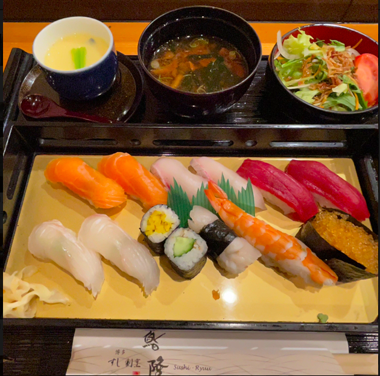
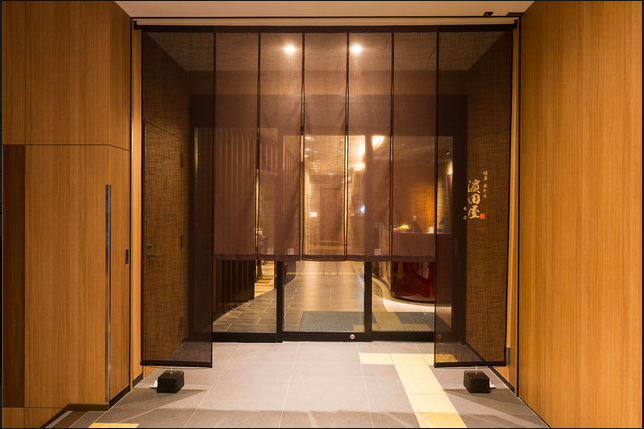
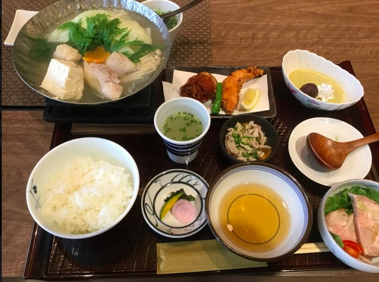
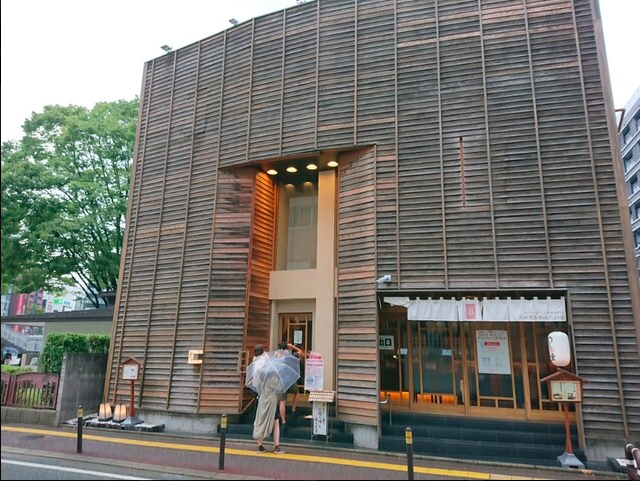
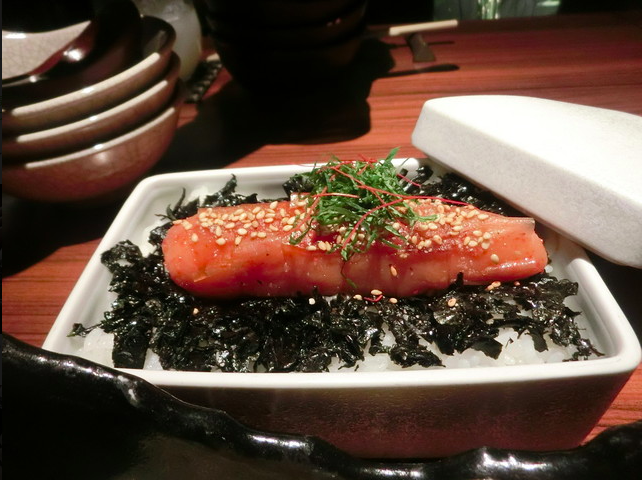
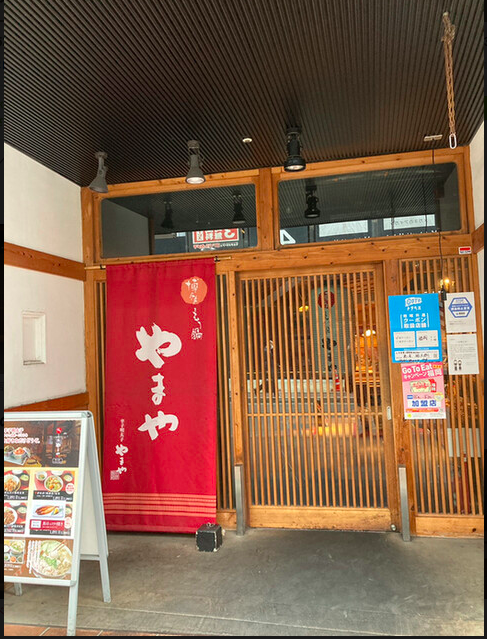
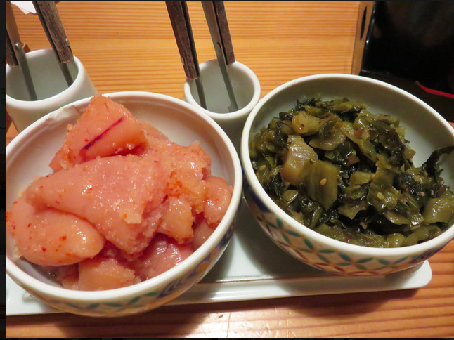
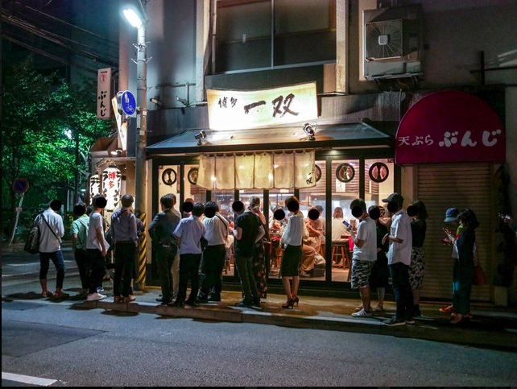
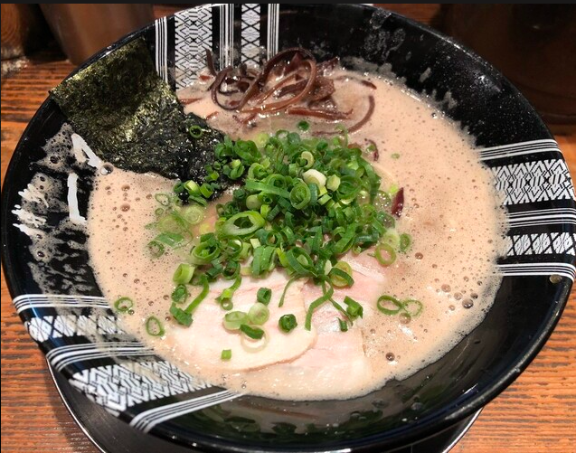

博多ランチ食べたいもの
候補1.鮨隆(スシリュウ)
食べログ
メモ
- 食べログ 寿司 WEST 百名店 2021に選ばれているお寿司屋さん。
ディナーだったら10000〜15000円クラスのお店が、
ランチだったら2000円程度で食べれる。
メニュー
寿司膳(八貫):1100円
寿司膳(十二貫):1320円
寿司セット(八貫):1650円
寿司セット(十二貫):1870円

場所
JR博多駅筑紫口から徒歩3分
候補2.博多水たき濱田屋 本店
メニュー
水炊きセット（二名様より）:2750円
・小鉢
・水炊き（ぶつ切り、ミンチ、四つ身、肝、野菜）
・めん又おじや
濱田屋御膳:2178円
・小鉢
・季節の一品
・唐揚げ
・水炊き小鍋
・御飯
・香物
・デザート
ザ・プレミアム・モルツ:660円
超炭酸ビームハイボール:550円
 
場所
博多駅より徒歩約9分
候補3.元祖博多めんたい重
メニュー
【元祖博多めんたい重】1,848円
手間ひまかけてじっくり漬け込んだ昆布巻き明太子まるごと1本を
海苔を敷いたほかほかご飯の上に乗せ
旨み成分たっぷりの「特製かけだれ」をかけて食べる新しい福岡の味。
生ビール スーパードライ中…748円
生ビール スーパードライ小…528円
 
場所
地下鉄中洲川端駅より徒歩５分（１番出口より）
候補4.博多もつ鍋 やまや 博多店
メニュー
ランチだと辛子明太子・からし高菜・ごはんを好きなだけおかわりし放題 鶏の唐揚げめんたい風味定食:1200円 じっくりたれ漬け豚生姜焼き定食:1300円 もつ鍋膳:2000円
 
場所
JR「博多駅」筑紫口より徒歩2分
候補5.博多一双 博多駅東本店
メニュー
Aランチ:700円
・ラーメン・ごはん（おかわり自由）
Ｂランチ:1,000円
・ラーメン＋まかない丼
ラーメン:680円
 
場所
博多駅から徒歩6分